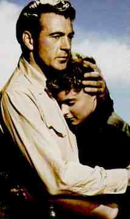

For Whom the Bell Tolls /B-, B+ There is a sense of reverential deference toward Hemingway’s material in the screen adaptation of For Whom the Bell Tolls, and indeed the production looks as if little was spared to bring this work of the Spanish Civil War to fruition. This is the first time since its road show engagement that For Whom the Bell Tolls has been show in this 170 minute version, and while the effort is to be applauded, the result is a mixed bag. Ingrid Bergman is incandescent in the role of Maria, a victim of the indiscriminate turmoil, who is smitten by the powerful and upright charms of Robert Jordan, played with a masculine combination of sangfroid and strength by Gary Cooper. The romance  between Robert and Maria is by far the most successful aspect of the film. Bergman folds herself into the lanky frame of Cooper like a kitten snuggling for warmth on a cold winter night. The work of these two stars is highly satisfying. The work of the supporting actors, however, is often dated in style. Overacting is in evidence in too many scenes and it is exacerbated by the multitude of close-ups used by director Sam Wood to embellish the power of these performers. Akim Tamiroff leers and slurps his way through the role of Pablo with simply two much vitriol and wine. Katina Paxinou, while often stirring in her role as Pablo’s woman Pilar, has her moments of thespian hyperbole as well.There is a great deal of plot repetition that does that enhance the production. Talk takes precedence over action and the pacing of the film suffers. What does standout on the plus side is the beautiful photography. There is an emphasis on the power of the locale and nature that obscures the events and people in For Whom the Bell Tolls. The laser disc presents the newly restored version of For Whom the Bell Tolls and the color is mostly glorious. There are still some marking of age and a scene or two is softer in focus than I would like, but overall it’s an excellent production. |